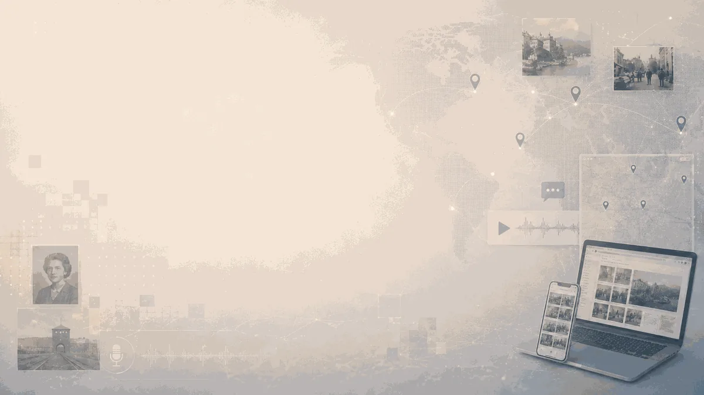
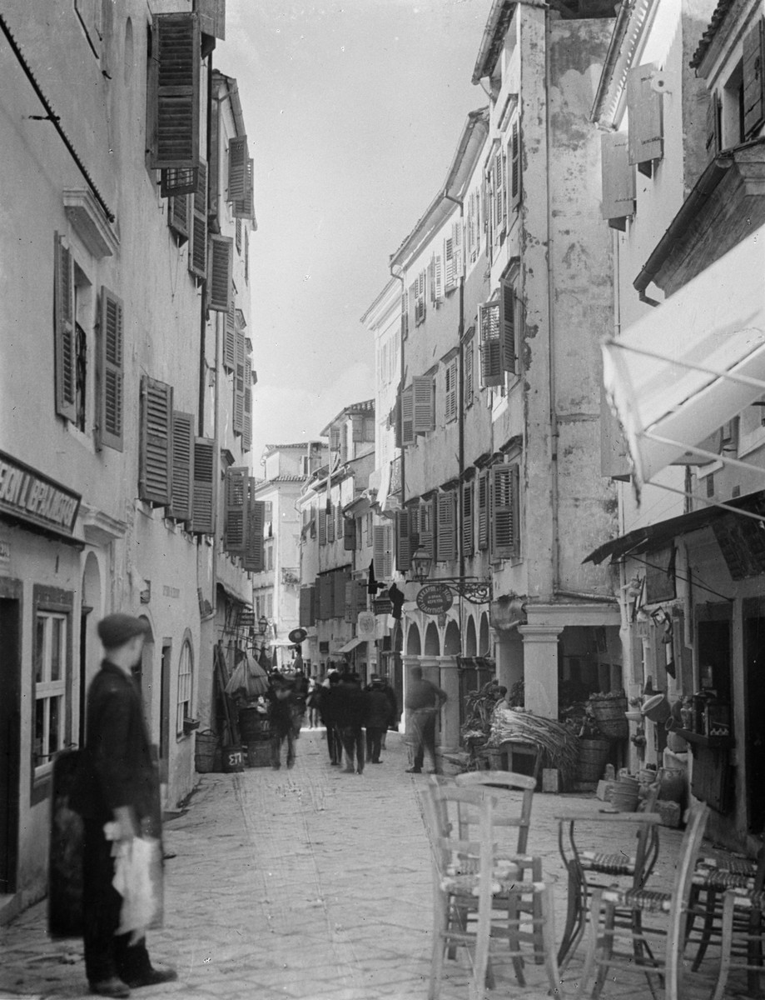

31 October 2026 · Digital Exhibition
From learning pathway to public exhibition
The first cycle culminates in a digital exhibition bringing participant-created histories into public space.
Workshops, lectures, exchanges, local educational activity and the digital exhibition trace how the programme moved from an international learning community into public-facing historical work.

The first cycle culminates in a digital exhibition bringing participant-created histories into public space.

An educational event dedicated to the history and Holocaust of the Jewish Community of Corfu combined historical context, documentary screening, archival sources, testimony and participatory discussion.

On 19 October 2026, the Luxembourg Centre for Contemporary and Digital History (C²DH) at the University of Luxembourg will host an online lecture by Dr Marina Bantiou, Scientific Lead and Project Coordinator of Who Owns Memory? Democratic Participation in Digital Public History, presenting her research on the Holocaust of the Jewish community of Corfu.
The lecture, “The Holocaust of the Jewish Community of Corfu: Oral Testimonies, Place and Digital Approaches to Public History,” is closely connected to the work of Who Owns Memory?, in which the Holocaust of the Jewish community of Corfu serves as a shared case study and methodological framework through which participants explore testimony, source criticism, place, ethics, representation and digital approaches to difficult histories. The presentation focuses on the Holocaust of the Jewish community of Corfu during 1943–1944 through the interrelated perspectives of oral testimony, place and digital public history.
It presents the development of interactive digital mapping that connects survivors’ testimonies with places of memory, archival material and short historical narratives. Designed also for educational use, these maps invite students and wider publics to engage with local history through testimony, spatial exploration and historical evidence.
Particular attention is given to how digital mapping can bring personal memory and local history into dialogue, while making less visible aspects of Corfu’s Jewish past accessible to wider audiences. The presentation also reflects on the possibilities and responsibilities of digital public history when documenting, interpreting and communicating difficult pasts.
These questions are closely connected to the wider work of Who Owns Memory?. The Corfu case is used as a shared methodological example through which participants consider how to formulate a public-history question, work critically with testimonies and archival sources, identify absent or marginalised voices, address questions of trauma and representation, and translate research into accessible digital forms. Participants then apply these approaches to their own local, national, family, community or transnational histories.
19 October 2026 | 15:00–16:00 Luxembourg time (CEST) / 16:00–17:00 Greece time (EEST)
Speaker: Dr Marina Bantiou
Format: Online via Webex
Host: Luxembourg Centre for Contemporary and Digital History, University of Luxembourg

Dr Giannis Perperidis explored probabilistic AI, historical knowledge, temporality, truth claims and democratic responsibility.

Branka Pavlović and Nikola Polić discussed participatory virtual walks between Berlin and Belgrade and the possibilities and challenges of digitally mediated remembrance.

After months of planning, conversations, applications and preparation, Who Owns Memory? Democratic Participation in Digital Public History officially begins with our first gathering on 17 August 2026.
Monday, 17 August 2026 · 18:00–19:30 EEST (UTC+3) · Online
Our opening session, Orientation & Community Building: Getting Started with Digital Public History Tools, will bring together the selected participants of our international cohort for the first time.
Led by Dr Marina Bantiou, Scientific Lead and Project Coordinator, the session will introduce participants to the aims and structure of Who Owns Memory? and establish the foundations for the collaborative work that will follow.
Together, we will begin exploring some of the questions that will accompany us throughout the programme: How do digital environments shape the ways we research, interpret and communicate the past? How can public history create opportunities for participation and dialogue? What responsibilities do we assume when we make histories and memories public?
Participants will also meet one another, explore their different backgrounds, interests and skills, learn about the programme’s workshops and final digital exhibition, and begin thinking about the stories they may develop during the project.
This orientation marks the beginning of a shared journey from historical inquiry to ethical, participatory and accessible digital public history.
We look forward to welcoming our participants and beginning this journey together.
.png)
The project invites students, researchers, educators, cultural heritage professionals, members of civil society, artists, and anyone interested in history, memory, and public engagement to explore how societies remember, interpret, communicate, and debate difficult histories in the digital age. Selected participants will become part of an international collaborative group and take part in a series of interactive online workshops, guided research activities, and creative digital public history projects. Working with oral testimonies, photographs, archival documents, historical sources, maps, and local narratives, participants will investigate how historical knowledge is created, communicated, and contested in contemporary public life. Participants will collaborate in creating one or more digital public history outputs. Applications are welcome from undergraduate and postgraduate students, PhD candidates, researchers, educators, museum and cultural heritage professionals, NGO and civil society professionals, artists, and anyone with an interest in history, memory, democracy, and digital culture. No previous experience in public history or digital tools is required. Participation is free of charge. Participants should be prepared to attend the online workshops; contribute to collaborative activities; create one small digital public history output; attend the final hybrid event online or in person; and complete a short project evaluation. Applications should be submitted in English. Deadline: 31 July 2026What will participants do?
Create your own digital public history project
Who can apply?
Participation
Apply